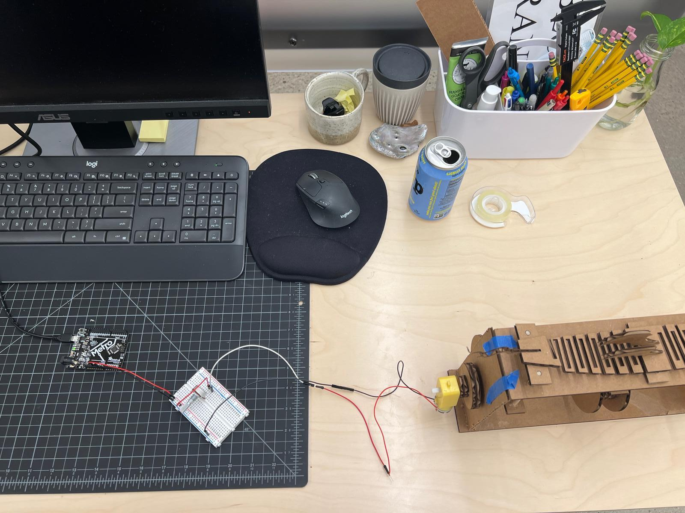

Week 3: Mechanical Design
Kinetic Sculpture Inspiration
This week, I was actually inspired by a scrap piece of laser cut cardboard I found that looked like a "living hinge" - thin flexible hinge (flexure bearing) made from the same material as the two rigid pieces it connects. I became interested in the idea of having the motor activate an object to move fluidly, like when you bend the living hinge piece on its own. When brainstorming what this object could be, I thought of Chinese Dragon puppets one might see at Lunar New Year. The puppeteers move the dragon in a similar way, elevating and lowering their portions with a vertical rod.
Sketching the Dragon
I started sketching some ideas in my notebook for how the whole structure might look, following the lead of the butterfly example from class. I learned later on that this level of fidelity would be a bit ambitious for this week, but I decided to power through anyways. Similar to the butterfly, I knew I needed to create a structure in which a horizontal axis supported wheels that would elevate each part of the dragon up and down incrementally. The flexibility of the living hinge cardboard would (ideally) support a fluid motion.
Constructing the Dragon
First, I tested the living hinge idea with a simple design to validate what the ideal dimensions and cut widths might be. I adapted this sketch by adjusting the form to include notches at the front, middle, and back to support the dragon's head, wings, and tail respectively. I found vector images of dragons online, traced them in Illustrator, and printed those components quickly.
Building the Structure & Playing with Arduino
To be honest, I wish I modeled the whole structure parametrically before I started sketching individual components in Fusion. I chose this path because it felt more managable for me to attack the construction in discrete chunks. I initially worked on the axel + wheel components, then worked on the planks that would elevate the dragon spine up and down on the wheels, and finally put it all together in the frame. After lots of trial and error, including the addition of extra thickness and guardrails on the wheels, I was able to manually spin the axel to move the dragon. Huzzah! I was happy to know the structure was somewhat working, though I knew I wanted to try to use the potentiometer and motor to smooth out the motion (and also challenge myself!). I haven't used Arduino in a while, so I brushed up on circuits and played around with LED lights and buttons. I then worked on using the potentiometer as a dial to control the motor, which would be attached to the main axis by way of an intermediary gear to keep it in place.
Final (?) Result
My troubleshooting strategy worked, but I think I spent many more hours than I initially expected. The structure still suffers from some weight and friction issues, but I hope to iterate on these challenges in the coming weeks. However, troubleshooting is natural, and now I'm aware of many more considerations to add to my own design process. My original vision came to life! With some more time, I would like to accomplish the following edits:
- Glue the entire frame together
- Add support structures that don't interfere with the wheels
- Adjust the piece holding the motor to the axel (I stripped the shape from overuse)
- Add an attachment for the motor to sit on its own

